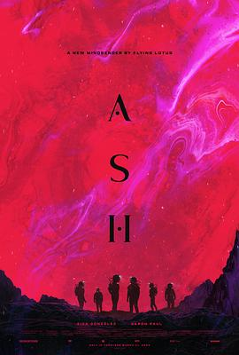

4.2
异世降临
Ash
2025
美国
评分 4.2
导演:
Flying Lotus（飞莲）
演员:
艾莎·冈萨雷斯 / 亚伦·保尔 / 伊科·乌艾斯 / 凯特·艾略特 / 比尤拉·寇尔 / 飞莲 / 安德鲁·B·米勒
类型:
恐怖,惊悚,科幻
剧情简介
莉娅在一艘孤立于外星球“灰星（Ash）”的科研站中醒来，头痛欲裂，她身旁已满是倒地无声的队友，鲜血静静渗入冰冷金属地板。她环视密闭舱室，身穿宇航服的她，却像误入噩梦。一个自称布里昂的男子通过气闸进入，他说自己接到了她发出的求救信号，任务是“救她离开”。然而，莉娅发现，他说的似乎只是一部分真相。两人沿着停滞的系统一路追查：浮现的闪回显示，莉娅、布里昂与队友被指派抵达 KOI-442 行星，开展人类移民可能性的探索；却发现一具神秘外星生命体，在队员体内扩散、吞噬记忆与生命。队长阿迪、莉娅的伴侣凯文…纷纷死于非命。莉娅逐渐意识到令人生畏的不只是怪物，还有自己失控的行动。在氧气警报声、荧光红灯闪烁中，她发现“救援者”布里昂死于舱体外、自己却没有逃脱。他们之间的信任崩塌，镜头切换至镜头内外、现实与幻觉交错——莉娅终于明白，她身上携带的寄生体，正利用她的身体与意识。在末日般的空间战斗里，她挥起焊接火炬，在通讯静止、空气稀薄、金属被割裂的空间里逃出，踏上前往轨道站的逃生舱。尽管舱门打开，却赫然发现轨道站已遭感染。烈火熊熊，她浮向未知星空，视线中既有毁灭亦有重生。本片将太空科幻与体感恐怖巧妙结合，“舱门缓缓关闭”“血液如墨”“闪回碎片化记忆”构成独特冷峻氛围。莉娅不仅要逃离外星怪物，更要直面自己——那段被封锁的记忆、被利用的身体、被背叛的信任。影片结尾拉开整片序幕：她脱离控制，却仍被未知拉扯——逃离了监狱，却没逃离真相。